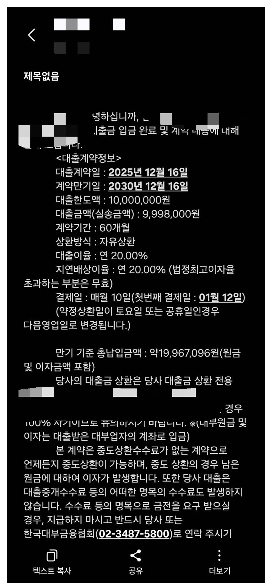
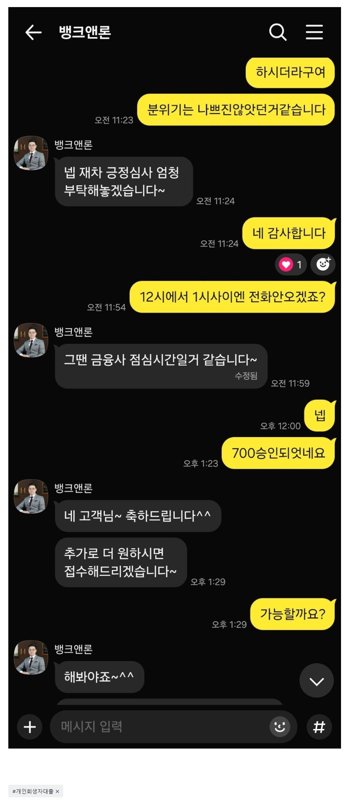

[개인회생자대출 ] 재직단기, 기대출과다.. 1700만원 개인회생자대출 승인. 김용혁대표님 이현섭과장님 통한 대출후기!
재직형태 : 직장인(정규직)
재직기간 : 2개월 15일정도..3개월미만입니다.
사대보험 : 유
연소득 : 7000만원
기대출 채무내역 : 대부2건 2600
회생변제회차 : 총45회차중 36회차 미납무월변제금 129만원
저번달에 필요자금이 필요하여 대환겸 변제금 미납금을 처리한다고 김용혁 대표님 도움을 받았었습니다. 하지만 이달에 가용자금이 많이 필요했고 그때 딱 뱅크앤론이 생각나서 바로 연락드렸습니다.
소득은 대비 부채는 괜찮았지만...짧은 재직기간에 기대출도 2600 으로 크게 있었는데 다른2곳 금융사에서 1700이란 큰 자금을 마련해주셨습니다. 너무 감사드립니다.ㅠ 다른분들도 꼭 회생자대출은 망설이지 말고 뱅크앤론으로! 진행하십시요.


https://cafe.naver.com/cityman88/309707